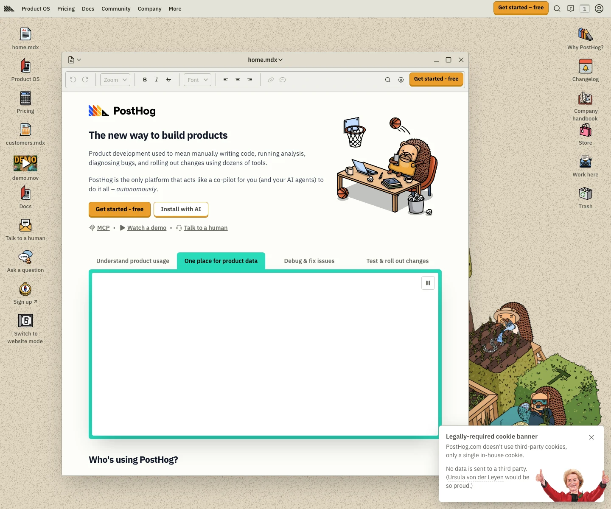

PostHog 主题
PostHog 的 Design.md 主题展示，围绕媒体内容、数据分析、趣味互动、暗色界面组织页面。
Product analytics. Playful hedgehog branding, developer-friendly dark UI.
媒体内容数据分析趣味互动暗色界面数据仪表盘SaaS 产品开发工具浅色界面B2B 产品效率工具专业工具

来源
- 来源
- getdesign.md
- 镜像
- github:VoltAgent/awesome-design-md
- 网站
- https://posthog.com/
- 详情
- https://getdesign.md/posthog/design-md
色板
#23251d: #23251d#f7a501: #f7a501#b17816: #b17816#dd9001: #dd9001#4d4f46: #4d4f46#33342d: #33342d#6c6e63: #6c6e63#9b9c92: #9b9c92#b6b7af: #b6b7af#bfc1b7: #bfc1b7#dcdfd2: #dcdfd2#ffffff: #ffffff
字体
display: IBM Plex Sans Variablebody: Source Code Promono: ui-monospacehints: IBM Plex Sans Variable,Source Code Pro,ui-monospace,IBM Plex Sans,Inter
圆角
control: 6pxcard: 6pxpreview: 8pxpill: 9999pxsource: design-md
间距
xxs: 2pxxs: 4pxsm: 8pxmd: 12pxlg: 16pxxl: 24pxxxl: 32pxsection: 80pxsource: design-md
使用建议
建议
- 建议：Use {colors.canvas} (cream — {#eeefe9}) as the page body. Never substitute pure white as the canvas。
- 建议：Reserve {colors.primary} (yellow-orange) for the primary CTA pill only. The "Get started — free" treatment is the brand's anchor。
- 建议：Render the brand wordmark with the hedgehog illustration alongside it, not as a stand-alone wordmark. The hedgehog IS the brand identity。
- 建议：Use IBM Plex Sans Variable across every text role — body 400, emphasis 600/700, display 800。
- 建议：Stack content sections at {spacing.section} (80px) rhythm with no decorative dividers between them; let the cream canvas continue uninterrupted。
避免
- 避免：introduce drop shadows on cards. Cards sit flat on cream with thin olive borders only。
- 避免：add a second saturated chromatic CTA. Yellow-orange is the only loud color in the system。
- 避免：replace the cream canvas with pure white or full-bleed dark hero bands. The cream is the brand。
- 避免：use the four-color callout banner pastels ({colors.accent-blue-soft}, {-green}, {-red}, {-purple}) as marketing-card backgrounds. They belong to inline doc content only。
- 避免：substitute the hedgehog illustration with a generic icon set. The character system is the brand。
查看 DESIGN.md